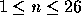

| Matrix Chain Multiplication |
Suppose you have to evaluate an expression like A*B*C*D*E where A,B,C,D and E are matrices. Since matrix multiplication is associative, the order in which multiplications are performed is arbitrary. However, the number of elementary multiplications needed strongly depends on the evaluation order you choose.
For example, let A be a 50*10 matrix, B a 10*20 matrix and C a 20*5 matrix. There are two different strategies to compute A*B*C, namely (A*B)*C and A*(B*C).
The first one takes 15000 elementary multiplications, but the second one only 3500.
Your job is to write a program that determines the number of elementary multiplications needed for a given evaluation strategy.
Input consists of two parts: a list of matrices and a list of expressions.
The first line of the input file contains one integer n (  ), representing the number of matrices in the first part. The next n lines each contain one capital letter, specifying the name of the matrix, and two integers, specifying the number of rows and columns of the matrix.
The second part of the input file strictly adheres to the following syntax (given in EBNF):
SecondPart = Line { Line } <EOF>
Line = Expression <CR>
Expression = Matrix | "(" Expression Expression ")"
Matrix = "A" | "B" | "C" | ... | "X" | "Y" | "Z"
For each expression found in the second part of the input file, print one line containing the word "error" if evaluation of the expression leads to an error due to non-matching matrices. Otherwise print one line containing the number of elementary multiplications needed to evaluate the expression in the way specified by the parentheses.
9 A 50 10 B 10 20 C 20 5 D 30 35 E 35 15 F 15 5 G 5 10 H 10 20 I 20 25 A B C (AA) (AB) (AC) (A(BC)) ((AB)C) (((((DE)F)G)H)I) (D(E(F(G(HI))))) ((D(EF))((GH)I))
0 0 0 error 10000 error 3500 15000 40500 47500 15125